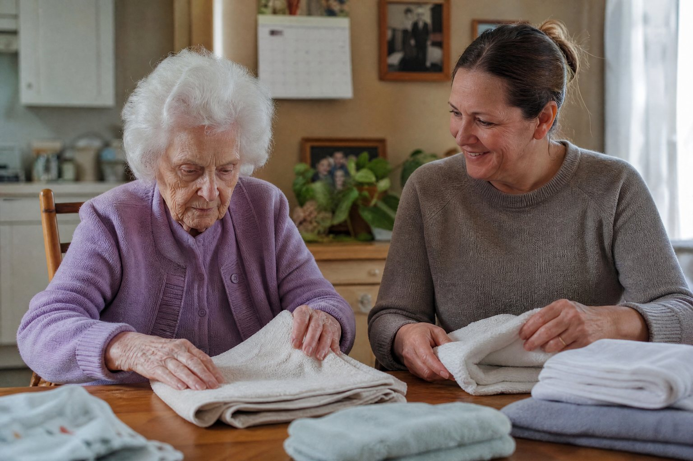

Mom ate lunch and was in good spirits. We spent some time on her puzzle. Nothing unusual to report.
A steady presence.
A familiar rhythm.
Thoughtful everyday support for families navigating memory loss and the growing need for supervision.
Let’s talk about care
Help with the everyday
Memory changes can make familiar tasks harder and leave you feeling constantly on call. We learn Mom’s routines, preferences, and what helps her feel at ease, then discuss a support plan with your family.
- Patient companionship and gentle prompts
- Support with familiar daily routines
- Personal care assistance, as agreed
- Observations and care updates shared with your family
Let’s talk honestly about what she needs.
Every family’s situation is different. We’ll discuss the level of supervision required, your concerns, and whether our available services are appropriate. Home care support does not replace medical assessment or treatment.
Know how Mom’s doing.
Without another
thing to manage.
A little about her day. Anything we noticed. What needs your attention—and what doesn’t.
All good keeps you connected. Needs your attention gets a conversation.
Breakfast, a short walk to the mailbox, and her morning programs. She asked to finish the puzzle border tomorrow.
We noticed something today and wanted you to know. Your coordinator will call to talk it through.
A little more
breathing room
starts here.
You don’t need to have all the answers. Tell us what’s becoming hard, and we’ll help you think through the next step.
Your request comes to Pink Glove Care—not a network of providers. We don’t sell your inquiry.